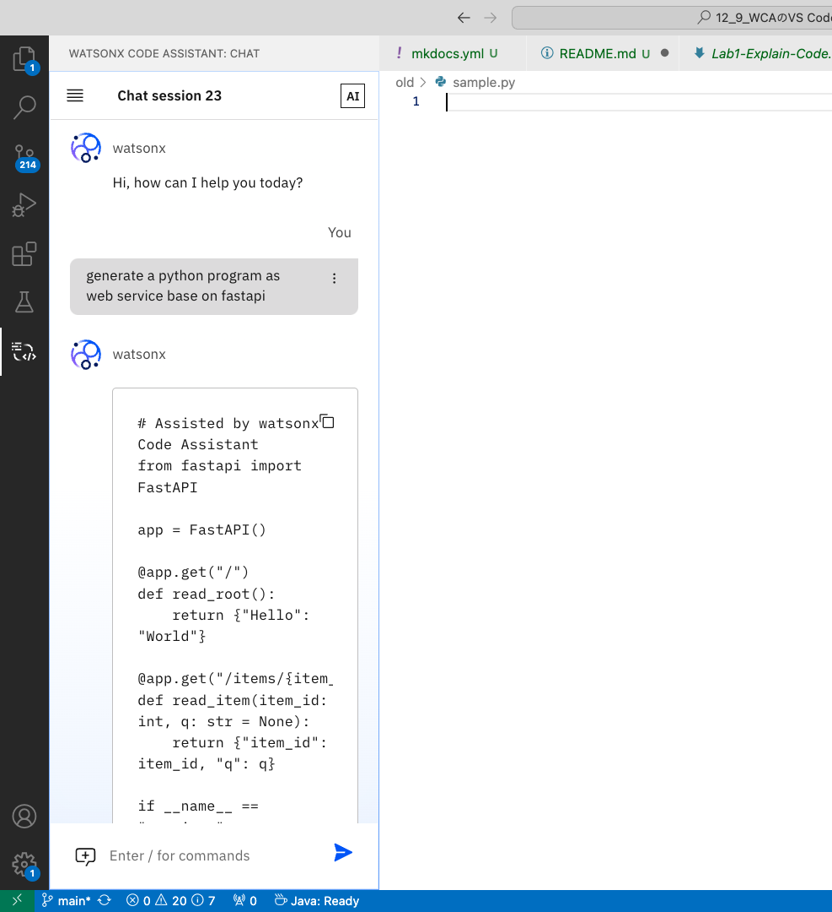
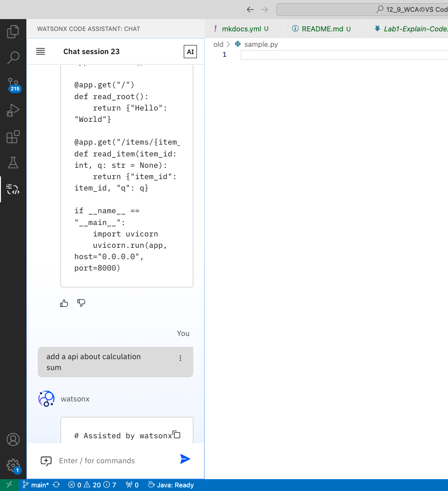
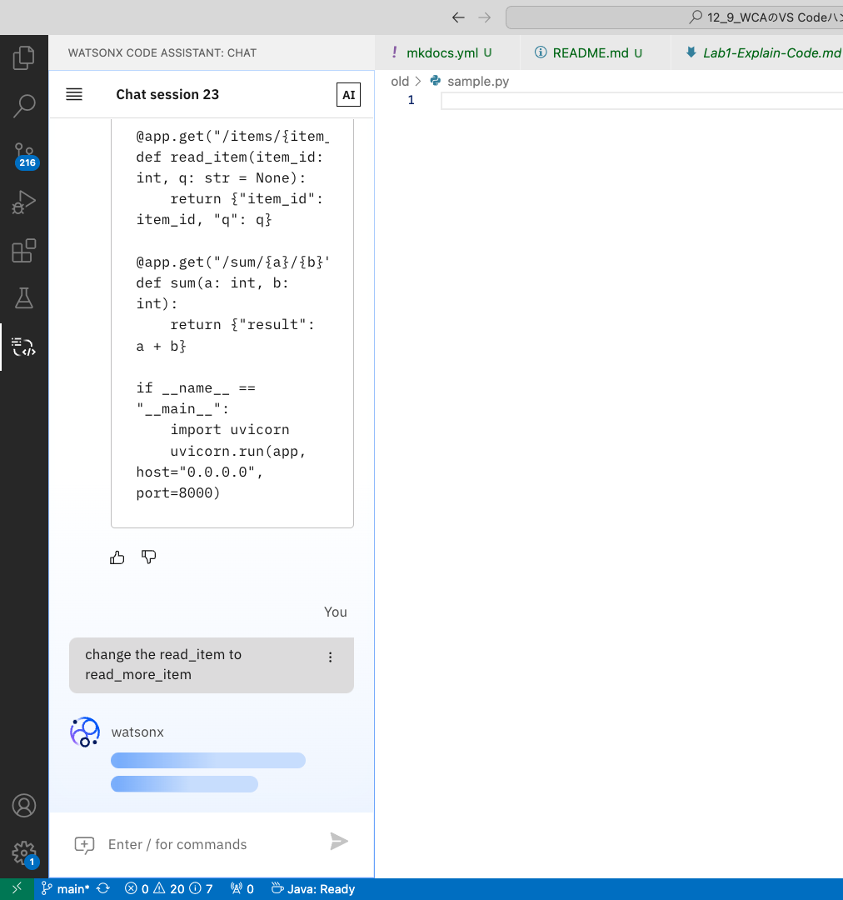

Lab1: コード提案生成機能
このページでは、Lab1を完了するための手順を順を追って説明しております。
Lab1 の範囲:
- チャットでの会話でのコード入力による、コードの提案の生成
注意点
- 生成 AI の特性上、コード提案生成にはバリエーションが含まれる場合があり、これは、生成される提案コードは毎回完全に同一ではない可能性があることを指しております。
- チャットは会話の履歴をコンテキストとして受け取ります。そのため、メリットとしては、フォローアップの質問ができるという点が挙げられます。しかし、プロンプトの出力にも影響を与える可能性があります。そのため、出力が望ましくない場合は、チャットセッションを新規に作成してください。以下のボタンを使用します:

ヒント
- 新しいチャットセッションを開始すると、明確な文脈が得られ、より良い結果につながります。
- 使用していないチャットセッションを削除することで整理できます。
- 簡単な指示でコード提案は生成されるため、シンプルな指示であることが望ましいです。
1. シンプルな指示
空のPythonファイルを作成します。(名前はsample.pyなど任意)
チャットの画面を開き、以下の内容を入力します。

コードの提案例は以下の通りです。
# Assisted by watsonx Code Assistant
from fastapi import FastAPI
app = FastAPI()
@app.get("/")
def read_root():
return {"Hello": "World"}
@app.get("/items/{item_id}")
def read_item(item_id: int, q: str = None):
return {"item_id": item_id, "q": q}
if __name__ == "__main__":
import uvicorn
uvicorn.run(app, host="0.0.0.0", port=8000)
2. 追加の指示を与える
より期待するコードを得るために、フォローアップの指示として機能の追加を指示します。

# Assisted by watsonx Code Assistant
from fastapi import FastAPI
app = FastAPI()
@app.get("/")
def read_root():
return {"Hello": "World"}
@app.get("/items/{item_id}")
def read_item(item_id: int, q: str = None):
return {"item_id": item_id, "q": q}
@app.get("/sum/{a}/{b}")
def sum(a: int, b: int):
return {"result": a + b}
if __name__ == "__main__":
import uvicorn
uvicorn.run(app, host="0.0.0.0", port=8000)
3. 修正の指示を与える
より期待するコードを得るために、フォローアップの指示として修正を指示します。

# Assisted by watsonx Code Assistant
from fastapi import FastAPI
app = FastAPI()
@app.get("/")
def read_root():
return {"Hello": "World"}
@app.get("/more_items/{item_id}")
def read_more_item(item_id: int, q: str = None):
return {"item_id": item_id, "q": q}
@app.get("/sum/{a}/{b}")
def sum(a: int, b: int):
return {"result": a + b}
if __name__ == "__main__":
import uvicorn
uvicorn.run(app, host="0.0.0.0", port=8000)
以上です。